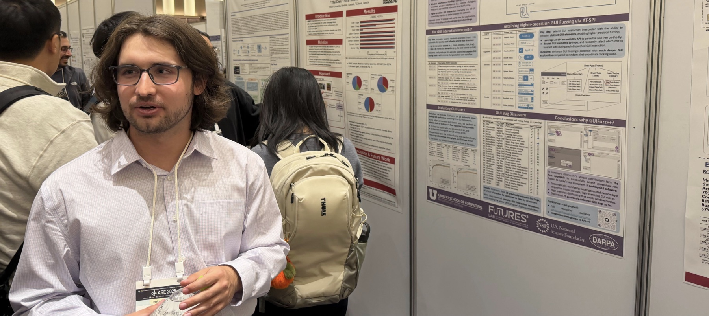
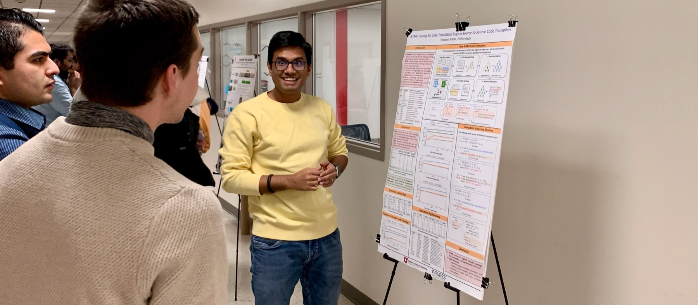
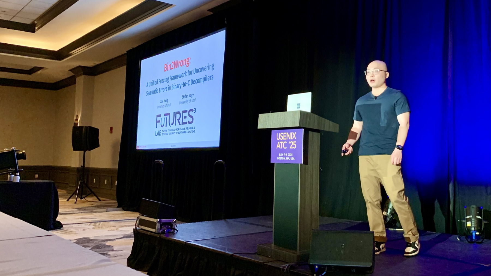
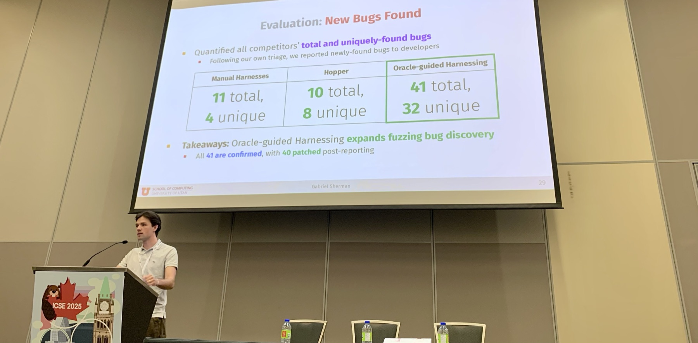

Harness-Driven Fuzzing
Automating the construction and adaptation of harnesses that connect fuzzers to complex APIs and make software components testable.
University of Utah · Kahlert School of Computing
We are a team of researchers who build practical systems with the aim of improving real-world software security and robustness.
We routinely find software bugs and publish our work in premier security and software engineering venues like ACM CCS and ICSE.




What we work on
Automating the construction and adaptation of harnesses that connect fuzzers to complex APIs and make software components testable.
Recovering the structure and behavior of compiled software for analysis and security when source code is unavailable.
Checking whether compilers and other program transformations preserve intended behavior across source and binary representations.
Automating the testing of interactive applications whose behavior depends on event sequences, interface state, and user workflows.
Selected work
Updates
FuTURES3 Lab
3446 Merrill Engineering Building
50 Central Campus Drive
Salt Lake City, UT 84112